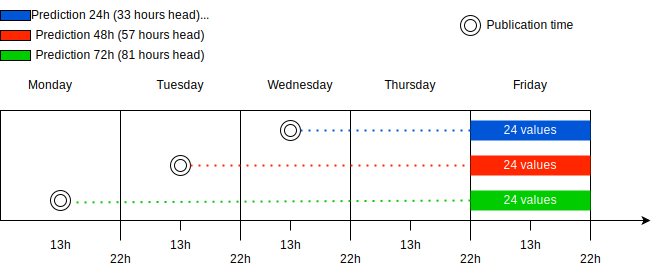
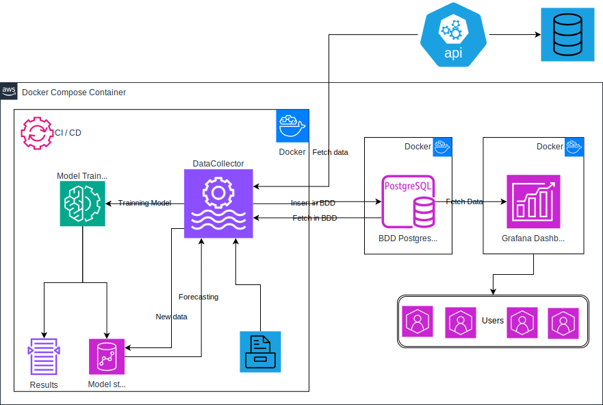

API Documentation of the Project
Welcome to the API documentation of the project. This section provides detailed information on the core modules used for model training and evaluation.
Overview
Electricity Price Prediction Project

Description
This project focuses on predicting electricity prices in Ireland using advanced machine learning (ML) and natural language processing (NLP) models. The primary objective is to forecast electricity prices 24, 48, and 72 hours ahead of the official SEMO PX (Single Electricity Market Operator Power Exchange) price publication at 13:00 each day, for the time period of 22:00 to 22:00 the following day.
Prediction Process
{kind=link}
This research aims to provide valuable insights for energy market participants, traders, and policymakers, enabling more informed decision-making in the dynamic Irish electricity market.
Process Deployement
{kind=link}
You can find the documentation here.
Prerequisites
Python >= 3.9
pip (Python package manager)
Git
Docker and Docker Compose
Installation
Clone the repository:
git clone https://github.com/Hugo35974/AI_MTU.git
Navigate to the project directory:
cd AI_MTU
(Optional) Create a virtual environment:
python3 -m venv venv
(Optional) Activate the virtual environment:
On Windows: .. code-block:: bash
venvScriptsactivate
On macOS and Linux: .. code-block:: bash
source venv/bin/activate
Install Docker Compose (if not already installed):
pip install docker-compose
Running the Project
To launch the project, execute the following command at the root of the project:
docker-compose up -d
This command starts the services defined in your docker-compose.yml file in detached mode.
Stopping the Project
To stop the services, use:
docker-compose down
Troubleshooting
If you encounter issues during installation or execution, ensure that:
Docker is properly installed and running on your machine.
You have the necessary permissions to execute Docker commands.
The ports required by the application are not already in use by other services.
License
This project is licensed under the MIT License. See the LICENSE file for more details.